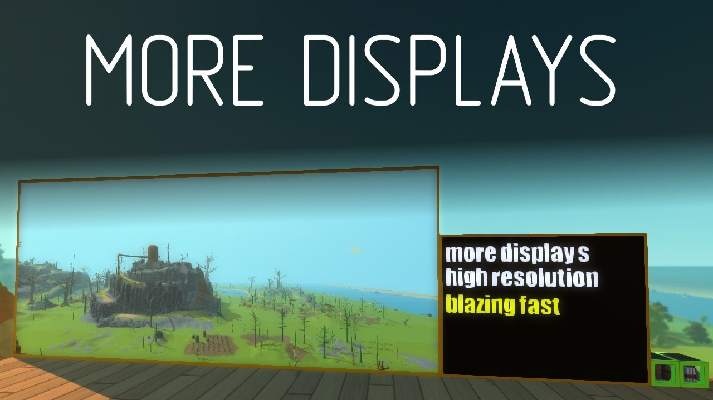

[EN]
This is my first experience with such mods, if you have any problems, be sure to write about them in the comments! Thanks! If you liked the addon, please rate it with a like.
Controllers (SComputers addon) - is a small addon for the SComputers mod [FORK], which will allow you to implement any mechanisms using programmable controllers that allow you to change the rotation angles of each bearing, and even the length of the connected pistons!
[RU]
Это мой первый опыт в создании модов, если у вас возникнут проблемы - обязательно пишите о них в комментариях! Спасибо.
Controllers (дополнение для SComputers) - небольшой аддон для мода SComputers [FORK], который позволит вам реализовать любые механизмы с помощью программируемых контроллеров, позволяющих изменять углы поворотов каждого подшипника, и даже длину подключенных поршней! Если вам понравилось дополнение, пожалуйста, оцените его лайком.
[Eng]
SComputers power toys is an add-on for SComputers that adds various unbalanced items to the game.
[Rus]
SComputers power toys - это дополнение для SComputers, которые добавляет в игру различные имбалансные предметы.

allows you to create displays of any size and resolution right inside the game.

more displays for SComputers. there is a wide range of aspect ratios and resolutions from 80x60 to 4k 21x9

saves data to the world and not to a block.
this approach allows you to save much more data.
files are saved after re-entering the world, but if you move the creation to another world, there will be a different set of files.
however, within the same world, you can save your creation to blueprint and load it from blueprint, everything will be fine in the files.
only the UUID of the file system that is stored inside the world is stored inside the block itself.
if you try to spawn two disks with the same UUID from the same blueprint, then all subsequent disks will change their UUID to a random one and copy the file system to a new UUID to avoid disk conflict.
however, you will not be able to use these disks to transfer files through the workshop.

This radio runs on betterAPI and can play music via a direct link.
unfortunately, you cannot insert a link from youtube or something like that here,
but you can place your .mp3/.wav file on any hosting (for example, github) and insert a direct (raw) link to the file.
direct links to streaming Internet radio stations will also work (however, connecting to a streaming radio station can take a long time and not the first time).